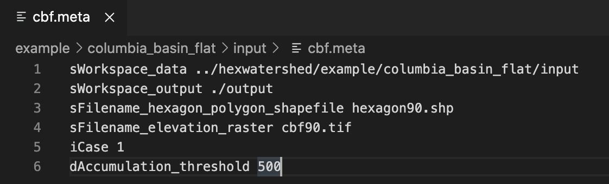
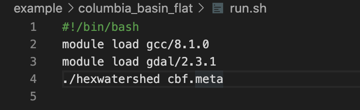
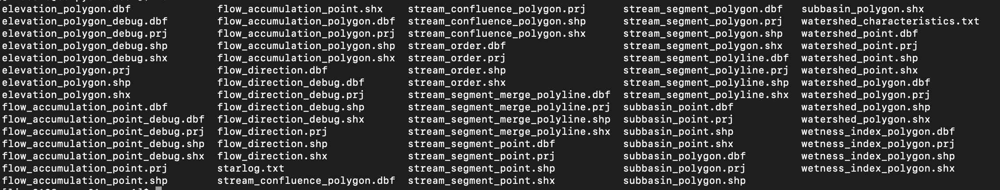

Usage¶
Overview¶
An instruction to run a HexWatershed model simulation with the example provided in the repository. If you haven’t built the model yet, please go to https://github.com/pnnl/hexwatershed/tree/master/install.
Data structure¶
HexWatershed uses a text based file as model input. Within this text file, each line represents a model configuration. An example of such a text file is provided here: https://github.com/pnnl/hexwatershed/tree/master/example/columbia_basin_flat/input/cbf.meta
The content of this text file is as follow:
{kind=link}
At each line, the configuration parameter is defined using a key-value pair, which is separated by a comma “,”.
The program retrieves these information and defines all the model inputs using a look-up table.
The program combines file name and directory to obtain the full path of actual file. For example, the actual DEM file will be constructed as:
sFilename_elevation_raster = sWorkspace_data + slash + “raster” + slash + sFilename_elevation_raster;
You need to strictly follow the file system tree structure when preparing your own simulation cases.
In HexWatershed 1.0, the dAccumulation_threshold is the flow accumulation threshold (https://pro.arcgis.com/en/pro-app/tool-reference/spatial-analyst/identifying-stream-networks.htm).
Data preparation¶
In HexWatershed 1.0, only the DEM raster and hexagon mesh Shapefile are needed as input files.
The DEM raster and mesh Shapefile must have the same spatial projection and spatial extent. This can be done using the following steps:
Download a watershed boundary Shapefile of the study area.
If your study area is in the USA, you can use the USGS Watershed Boundary Datasets (WBD). (https://www.usgs.gov/core-science-systems/ngp/national-hydrography/watershed-boundary-dataset?qt-science_support_page_related_con=4#qt-science_support_page_related_con)
Create a buffer zone around the boundary Shapefile. This can be done using either ArcGIS program (https://desktop.arcgis.com/en/arcmap/10.3/manage-data/creating-new-features/creating-a-buffer-around-a-feature.htm) or QGIS (https://docs.qgis.org/2.8/en/docs/gentle_gis_introduction/vector_spatial_analysis_buffers.html).
Download the DEM raster covering the entire study area buffer zone. Re-project the raster and convert it to Geotiff format if necessary.
Extract the DEM raster Geotiff file with the buffer zone Shapefile.
Generate the hexagon mesh using the MMQGIS plugin and the extracted DEM as spatial extent.
(http://michaelminn.com/linux/mmqgis/). The resolution of the hexagon should be defined using its area instead of edge length.
Model simulation¶
After all the input files are prepared, you can update the text file as the model input parameter.
Then you can prepare another bash script similar to:
{kind=link}
Then you may run the simulation by typing in the terminal:
chmod 755 run.sh
./run.sh
{kind=link}
The terminal will prints some model information directly:
By then, you should have a successful hexWatershed simulation.
Simulation results¶
After the simulation is finished, you should see a list of Shapefiles within the output directory. - hexagon DEM - flow direction - flow accumulation - stream segment - stream order - subbasin boundary - watershed boundary
{kind=link}
You can use any GIS tools (ArcGIS, ENVI, and QGIS, etc.) to visualize the results.
Below are some example outputs from this example:
Flow direction
Flow accumulation
Subbasin